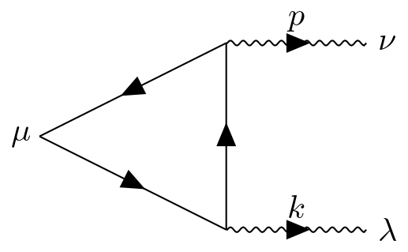

場の量子論では、古典論にあった対称性が量子論による補正によって破れてしまう現象が知られています。これらはアノマリーと呼ばれており、場の理論の重要な話題の1つです。
アノマリーとなると、まず最初に紹介されるのはQEDでの三角ダイアグラムでしょう。このダイアグラムは、下図のようなもので、これを計算することによって\(\partial_{\mu}j^{\mu 5}\)の値が分かります。ラグランジアンが与えられていればこの値が計算できるので、この理論のカレントの保存が量子論でも確かめられることになります。

というわけで、このダイアグラムを計算してみようと思うわけですが、自分が予習しているときは良く分かりませんでした。ですが先日、ゼミで計算の方向性を教えてもらったので、ちゃんと行間を埋めてみようと思います。